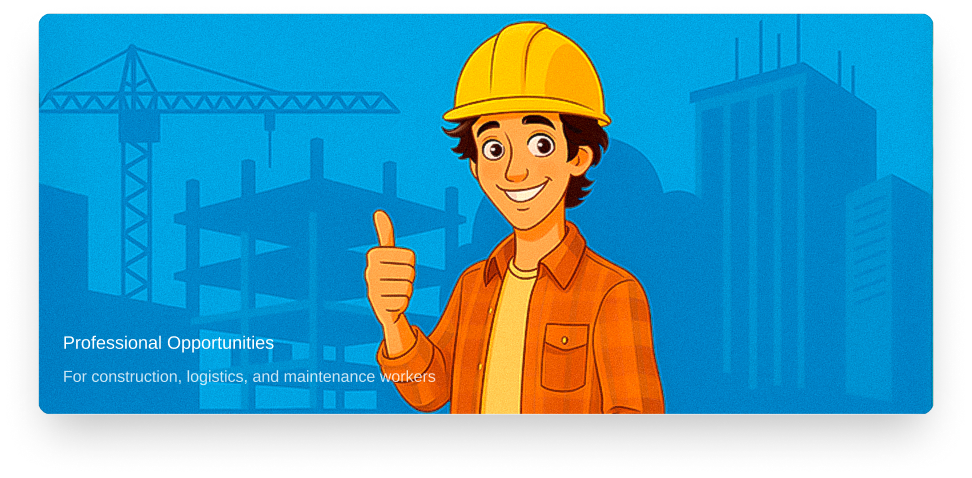
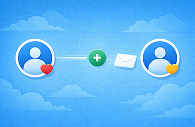

Jobsy
Jobsy
Расскажите, какую работу вы ищете
Дальше этим займется ИИ. Jobsy оформляет CV, пишет письма и отправляет их работодателям. Вы ждете ответа.
Создать Jobsy-профиль бесплатно ->Без правил и шаблонов
Вы пишете в чате так, как привыкли. Система подстраивается под ваши ответы.
ИИ делает всё сам
Jobsy на основе диалога оформляет CV и пишет письма работодателям.
Без вашего участия
Jobsy сам связывается с компаниями и отправляет заявки от вашего имени.
Вы просто ждёте
Когда работодатели отвечают, вы получаете уведомление и решаете, что делать дальше.

Почему Jobsy работает иначе
Вакансии привлекают сотни откликов
На популярные вакансии работодатели получают десятки и сотни заявок. В большинстве случаев внимание уделяется только первым из них.
Работа напрямую с компаниями
Jobsy напрямую связывается с компаниями, учитывая профиль кандидата, и выходит за рамки опубликованных вакансий и форм сотрудничества.
Письма формируются индивидуально
Письма создаются на основе вашего профиля и диалога, а не по шаблону, и адаптируются под каждую компанию.
Умеренный ритм отправки
Письма отправляются постепенно и в разной формулировке, как в обычной личной переписке.
Ответы приходят напрямую вам
Если компании заинтересованы, они пишут вам напрямую, без лишних шагов и посредников.

Поиск продолжается без вашего участия
После запуска Jobsy продолжает искать подходящие компании и возможности автоматически, без необходимости что-то делать каждый день.
Кому подойдёт Jobsy
Часто задаваемые вопросы
Всё, что нужно знать о Jobsy
Какой формат работы ищет Jobsy, только найм?
Jobsy не ограничивается только классическим наймом. При прямом контакте компании могут рассматривать разные форматы сотрудничества, всё зависит от ситуации и договорённостей.
Это может быть работа как самозанятый?
Иногда компании рассматривают сотрудничество с самозанятыми. Вы сами решаете, подходит ли вам такой формат.
Jobsy решает, как именно меня будут оформлять?
Нет. Jobsy помогает выйти на прямой контакт с компаниями. Формат сотрудничества всегда обсуждается напрямую между вами и работодателем.
Сколько времени занимает поиск работы через Jobsy?
Это зависит от вашей квалификации и рынка. Jobsy начинает отправлять заявки сразу после настройки профиля, а первые ответы могут прийти в течение нескольких дней или недель.
Нужно ли мне знать финский или английский?
Jobsy работает с вакансиями на разных языках. Вы указываете предпочтения, и система подбирает подходящие варианты с учётом ваших языковых навыков.
Могу ли я остановить поиск, если нашёл работу?
Да, вы можете приостановить или полностью остановить поиск в любой момент через свой профиль.
Какие страны охватывает Jobsy?
Jobsy ориентирован на рынки Финляндии и Евросоюза, но может связываться с компаниями в других странах при наличии подходящих вакансий.
Платный ли сервис?
Создание профиля бесплатно. Подробности о тарифах доступны на странице тарифов после регистрации.
Может ли Jobsy искать работу в нескольких сферах одновременно?
Да, вы можете указать несколько направлений, и Jobsy будет отправлять заявки по каждому из них.
Что происходит с моими данными?
Ваши данные используются только для поиска работы и связи с работодателями. Мы не передаём их третьим лицам без вашего согласия.
Могу ли я редактировать письма перед отправкой?
Да, вы можете просматривать и корректировать все письма перед тем, как Jobsy отправит их компаниям.
Какой опыт нужен для использования Jobsy?
Jobsy подходит для соискателей с любым уровнем опыта — от начинающих до профессионалов. Главное — желание найти работу.
Что если мне не понравится работа Jobsy?
Вы можете отменить подписку в любой момент. Никаких штрафов или скрытых условий.
Как быстро Jobsy отвечает на новые вакансии?
Jobsy регулярно сканирует новые вакансии и может отправить заявку в течение нескольких часов после появления подходящей позиции.